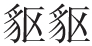
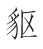
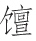

元和天子神武姿 [1] ，彼何人哉轩与羲 [2] 。誓将上雪列圣耻 [3] ，坐法宫中朝四夷 [4] 。淮西有贼五十载 [5] ，封狼

生生罴 [6] 。不据山河据平地，长戈利矛日可麾 [7] 。帝得圣相相曰度，贼斫不死神扶持 [8] 。腰悬相印作都统 [9] ，阴风惨淡天王旗 [10] 。愬武古通作牙爪 [11] ，仪曹外郎载笔随 [12] 。行军司马智且勇 [13] ，十四万众犹虎貔 [14] 。入蔡缚贼献太庙 [15] ，功无与让恩不訾 [16] 。帝曰汝度功第一 [17] ，汝从事愈宜为辞 [18] 。愈拜稽首蹈且舞 [19] ，金石刻画臣能为 [20] 。古者世称大手笔 [21] ，此事不系于职司 [22] 。当仁自古有不让 [23] ，言讫屡颔天子颐 [24] 。公退斋戒坐小阁 [25] ，濡染大笔何淋漓 [26] 。点窜《尧典》、《舜典》字 [27] ，涂改《清庙》、《生民》诗 [28] 。文成破体书在纸 [29] ，清晨再拜铺丹墀 [30] 。表曰臣愈昧死上 [31] ，咏神圣功书之碑 [32] 。碑高三丈字如斗，负以灵鳌蟠以螭 [33] 。句奇语重喻者少，谗之天子言其私。长绳百尺拽碑倒，粗砂大石相磨治 [34] 。公之斯文若元气 [35] ，先时已入人肝脾 [36] 。汤盘孔鼎有述作，今无其器存其辞 [37] 。呜呼圣王及圣相 [38] ，相与烜赫流淳熙 [39] 。公之斯文不示后 [40] ，曷与三五相攀追 [41] 。愿书万本诵万遍，口角流沫右手胝 [42] 。传之七十有二代，以为封禅玉检明堂基 [43] 。【题解】
韩碑，即韩愈所撰《平淮西碑》。唐宪宗元和九年（814）闰八月，淮西节度使吴少阳卒，其子元济匿葬不报，自领军务，纵兵焚掠，威胁东都洛阳。朝廷督诸道兵讨吴元济，四年不克。元和十二年七月，宰相裴度兼彰义军节度使、淮西宣慰处置使，亲自督师征讨。十月，唐邓随节度使李愬雪夜入蔡州，擒吴元济，淮西乱平。时韩愈为裴度行军司马，乱平，受命撰《平淮西碑》，其词多叙裴度事，强调“凡此蔡功，惟断乃成”。李愬不平，其妻为宪宗姑母唐安公主女，出入禁中，诉韩碑不实。宪宗诏令磨去韩文，命翰林学士段文昌重撰。李商隐联系现实，有感于这桩公案，遂作此诗，时约在宣宗大中元年（847）。当与韩碑参读。
【评析】
葛立方曰：“裴度平淮西，绝世之功也；韩愈《平淮西碑》，绝世之文也。非度之功，不足以当愈之文；非愈之文，不足以发度之功。”（《韵语阳秋》卷三）正因如此，李商隐的这首诗，对韩碑给予最高的评价，极尽颂扬之能事。他不仅完全赞同韩碑的观点，而诗的风格亦学韩，以文为诗，以议论为诗，恣肆豪纵，雄健高古，甚似韩愈，但清新明快，晓畅流利，实又过之。就思想而言，李商隐和韩愈一样，都是坚决反对藩镇割据，主张加强中央集权以维护祖国统一的。而《韩碑》一诗，较韩碑更加突出宰相裴度的地位和作用，更加强调君臣遇合，君臣相协，“呜呼圣王及圣相，相与烜赫流淳熙”二句，可谓全诗之纲，主旨所在。“元和天子”要“上雪列圣耻”，关键在于“得圣相”。“贼斫不死神扶持”，天佑圣相，其意亦在辅佐圣君。只要君臣同心，群策群力，藩镇叛将再猖獗，也是可以缚之“献太庙”的。韩碑“句奇语重喻者少”，所喻者何？就是君臣同心，强藩必削。韩愈“濡染大笔何淋漓”，极意发挥的就是这种思想。《韩碑》揄扬韩碑“咏神圣功”，比之于汤盘、孔鼎，深情地慨叹“公之斯文若元气”、“公之斯文不示后，曷与三五相攀追”，极尽一唱三叹之遗意，着力发挥的也是这种思想。韩碑之不朽，就在于它能“传之七十有二代，以为封禅玉检明堂基”。韩愈撰碑、扑碑之事，已经过去了几十年，李商隐何以“愿书万本诵万遍，口角流沫右手胝”，对它一往情深呢？如果联系李商隐一贯借咏史以寄慨的创作特点，我们认为，他的《韩碑》是融有很深的现实感慨的。确切地说，他是为李德裕而发的。李德裕与裴度极为相似，两人都是唐中叶“第一等人物”，而且有着很深的关系。德裕之父李吉甫，元和初宰相，亦主削藩，在宪宗平定刘辟、李锜、吴元济、李师道等叛镇过程中，他都有谋划之功，与裴度是一致的。裴度又曾荐德裕为相。裴度相宪宗，与德裕相武宗，君臣同心亦极相似。《旧唐书•裴度传论》云：“诚社稷之良臣，股肱之贤相。元和中兴之力，公胡让焉。”《旧唐书•李德裕传论》则云：“言行计从，功成事遂，君臣之分，千载一时。”特别是在反对藩镇割据和限制宦官专权两个重大政治问题上，裴、李政见是相同的。而德裕的平定泽潞叛镇刘稹，与裴度的平定淮西吴元济之乱，简直可以说是历史的重演。会昌三年（843）四月，昭义节度使刘从谏卒，其侄刘稹秘不发丧，擅称留后。李德裕在武宗的信任和支持下，力排众议，坚决讨伐，结果取得了平叛的胜利。李商隐在《上李太尉（德裕）状》中云：“武宗皇帝英断无疑，睿姿不测。……太尉妙简宸襟，式光洪祚，有大手笔，居第一功。”又在代幕主郑亚（李德裕同党）草拟的《太尉卫公会昌一品集序》中云：“（武宗）曰：‘我将俾尔以大手笔，居第一功。我意属此，尔无让焉。’”称誉李德裕为“万古之良相”。所用词句都和《韩碑》相同。《会昌一品集》为李德裕自编文集，序作于宣宗大中元年（847）李被罢相分司东都时。牛党制造冤案诬陷李德裕，李商隐在《为荥阳公与三司使大理卢卿启》中严正指出：“逝者难诬，言之罔愧。”力为德裕辩诬。这与《韩碑》中“谗之天子言其私”，为扑碑深致不满，又何其相似乃尔！诗当作于此时，大致是不差的。王夫之曰：“唐之相臣能大有为者，狄仁杰而外，德裕而已！”（《读通鉴论》卷二十六）可见李商隐对李德裕的推崇，并非溢美之词。《新唐书•裴度传论》云：“惟天子赫然排群议，任度政事，倚以讨贼。身督战，遂平淮西。非度破贼之难，任度之为难也。韩愈颂其功曰：‘凡此蔡功，惟断乃成。’其知言哉！”李商隐借咏韩碑所抒发的，正是这种君臣难遇的深沉绵渺之慨。
【注释】
[1] 元和天子：指唐宪宗李纯。神武：神明而威武。《汉书•刑法志》：“汉兴，高祖躬神武之材，行宽仁之厚，总揽英雄，以诛秦、项。”杜甫《投赠哥舒开府翰二十韵》：“君王自神武，驾驭必英雄。”宪宗谥曰“圣神章武孝皇帝”。
[2] 轩：黄帝轩辕氏。羲：伏羲氏。此以古之圣君比宪宗。
[3] 雪：洗刷。列圣耻：指玄、肃、代、德、顺历朝皇帝身受藩镇叛据之害，如玄宗因安史之乱而逃奔四川、德宗因朱泚之乱而逃往奉天等。韩碑：“往在玄宗，崇极而圮，河北悍骄，河南附起。四圣不宥，屡兴师征，有不能克，益戍以兵。”
[4] 法宫：正殿。《汉书•晁错传》：“五帝神圣……处法宫之中，明堂之上。”四夷：四方边远之地。韩碑：“既定淮蔡，四夷毕来；遂开明堂，坐以治之。”
[5] “淮西”句：淮西藩镇自宝应元年（762）李忠臣拜淮西十一州节度，中经李希烈、陈仙奇、吴少诚、吴少阳，直到元和十二年（817）吴元济被杀，凡五十六年，举成数而言，故曰“五十载”。韩碑：“蔡帅之不廷授，于今五十年。”
[6] 封狼：大狼。

（chū）：似狸而大。罴（pí）：一种大熊，又叫人熊或马熊。李忠臣贪暴嗜色，为李希烈所逐，后叛附朱泚被诛。李希烈性毒酷，僭称建兴王，后被陈仙奇毒死。仙奇又为吴少诚所杀。少诚出兵攻掠，少阳自为留后。元济不听朝命。故以凶残猛兽比之。[7] 日可麾：《淮南子•览冥训》载：鲁阳公与韩交战，战酣日暮，援戈而挥之，日为之退三舍。麾：通“挥”。《新唐书•吴元济传》：“自少诚盗有蔡四十年，王师未尝傅城下。又尝败韩全义、于，以是兵骄无所惮。内恃陂寖重阻，故合天下兵攻之，三年才克一二县。”
[8] 度：裴度，字中立，河东闻喜（今属山西）人。他与宰相武元衡力主对淮西讨伐，淄青镇李师道和成德镇王承宗上表请赦吴元济，宪宗不许。元和十年六月，李师道派刺客暗杀武元衡，刺伤裴度。宪宗怒曰：“度得全，天也。……吾倚度，足破三贼矣！”三天后，即拜裴度为相（《新唐书•裴度传》）。二句指此。斫（zhuó）：砍。神扶持：语出孙绰《游天台山赋》“实神明之所扶持”。
[9] 都统：统帅。时裴度以宰相兼任淮西宣慰处置使，充彰义军节度使、蔡州刺史。“度名虽宣慰，其实行元帅事”（《旧唐书•裴度传》）。
[10] 天王旗：天子之旗。
[11] 愬（sù）：指唐邓随节度使李愬。武：指淮西诸军行营都统韩弘之子公武。古：指鄂岳沔蕲安黄团练使李道古。通：指寿州团练使李文通。牙爪：即爪牙，语出《诗经•小雅•祈父》：“祈父，予王之爪牙。”此谓得力干将。
[12] 仪曹外郎：唐武德三年，改仪曹承务郎为礼部员外郎。时李宗闵以礼部员外郎兼侍御史，为判官书记，从裴度出征，故曰“载笔随”。
[13] 行军司马：时以太子右庶子韩愈兼御史中丞，充彰义军行军司马。韩愈曾上《论淮西事宜状》陈说利害，谓“以（淮西）三小州残弊困剧之余，而当天下之全力，其破败可立而待也”。其论有豪杰智略、儒者规矩。尝请先入汴说韩弘，使其协力；又请自提兵五千，间道入取吴元济，裴度不从。故曰“智且勇”。
[14] 虎、貔（pí）：皆为猛兽，以比战士英勇。
[15] 入蔡缚贼：指李愬雪夜袭蔡州，擒吴元济，献于庙社，斩之于京师独柳树。太庙：皇帝的祖庙。
[16] 功无与让：功劳最大，无人可比。无与让：犹当仁不让。恩不訾（zī）：皇恩浩荡，不可计量。訾：同“赀”，计量。裴度以平蔡功，诏加金紫光禄大夫、弘文馆大学士，赐勋上柱国，封晋国公，食邑三千户。复知政事，故曰“恩不訾”。
[17] 功第一：汉初功臣论功行封，高祖以萧何为第一。唐高宗总章元年四月，以太原原从西府功臣分为第一功、第二功二等官。宪宗朝，史称“唐室中兴”，论功裴度当第一，可见所云有自。
[18] 从事：属吏。韩愈为裴度行军司马，故云。宜为辞：最适宜属辞以纪裴度之功。韩愈《进〈平淮西碑〉表》云：“收复淮西，群臣请刻石纪功，明示天下，为将来法式；陛下推劳臣下，允其志愿，使臣撰《平淮西碑》文者。”
[19] 稽首：叩头。韩碑：“群臣请纪圣功，被之金石，皇帝以命臣愈。臣愈再拜稽首而献文曰。”蹈且舞：手舞足蹈。
[20] 金石刻画：指镌刻在钟鼎、碑石上的歌功颂德文字。
[21] “者”：一作“今”。大手笔：犹言大著作，指有关国家大事的著述。《陈书•徐陵传》：“世祖、高宗之世，国家有大手笔，皆陵草之。”其文颇变旧体，缉裁巧密，多有新意。
[22] 职司：主管其事的官员，司其职者当为翰林学士。韩愈《进〈平淮西碑〉表》云：“陛下……使臣撰《平淮西碑》文者，闻命震骇，心识颠倒，非其所任，为愧为恐，经涉旬月，不敢措手。……兹事至大，不可轻以属人。”
[23] 当仁不让：语出《论语•卫灵公》“当仁不让于师”，此有义不容辞意。
[24] 颔（hàn）：动也。颐（yí）：面颊。颔颐：犹言点头，首肯。
[25] 斋戒：古人祭祀前的一种庄重仪式，此指韩愈撰碑时的严肃恭谨。
[26] 濡染：浸润。淋漓：酣畅貌，此指写作时大笔挥洒自如。
[27] 点窜：涂改文字。《尧典》、《舜典》：均为《尚书》篇名。
[28] 《清庙》、《生民》：均为《诗经》篇名。
[29] 破体：破当时为文之体，指在继承前人体式的基础上有所变异创新，即所谓“为文已变当时体”（苑咸《酬王维》）、“能废前法者乃为雄”（孙矿《与余君房论文书》十一）。亦前引《徐陵传》“其文颇变旧体，多有新意”之意。
[30] 丹墀（chí）：殿前涂以红漆的台阶。
[31] 昧死：冒死。韩愈《进〈平淮西碑〉表》云：“强颜为之，以塞诏旨，罪当诛死。其碑文今已撰成，谨录封进，无任惭羞战怖之至。”
[32] 咏：颂扬。神：《孟子•尽心》：“圣而不可知之谓神。”神圣功：指宪宗、裴度这对圣君贤相的平蔡之丰功伟绩，即韩碑所云：“不赦不疑，由天子明。凡此蔡功，惟断乃成。”
[33] 灵鳌（áo）：神龟。蟠：盘绕。螭（chí）：龙类动物。此句谓神龟驮碑，碑石上镌刻有盘绕的螭龙。
[34] 喻：懂得，领会。私：偏私。拽：用力拉。磨治：指磨去碑文。“句奇”四句：指李愬妻向宪宗陈诉韩碑不实事。但罗隐《说石烈士》则谓李愬部下石孝忠，因愤韩碑“功尽归乎丞相”，而推碑几仆，致为宪宗所闻，得以面陈李愬功，宪宗“复诏翰林段学士撰《淮西碑》，一如孝忠语”。
[35] 斯文：指《平淮西碑》。元气：精神，为生命之原气。
[36] 先时：早时。入人肝脾：繁钦《与魏文帝笺》：“凄入肝脾，哀感顽艳。”
[37] 汤盘：传说为商汤沐浴之盘，其上刻铭文曰：“苟日新，日日新，又日新。”孔鼎：为孔子祖先正考父之鼎，其上刻铭文曰：“一命而偻，再命而伛，三命而俯，亦莫余敢侮。

于是，鬻于是，以糊余口。”此以汤盘、孔鼎誉韩碑，碑虽拽倒磨去，但碑文却光耀人间，流传千古。[38] 圣王：指宪宗。王：一作“皇”。圣相：指裴度。
[39] 烜（xuǎn）赫：声威昭著。淳熙：光明正大。
[40] 示后：传示后世。
[41] 曷（hé）：怎么，何能。三五：三皇五帝，其具体所指，说法不一。相攀追：犹言看齐。
[42] 胝（zhī）：胼胝，指手上磨起老茧。
[43] 七十有二代：《史记•封禅书》：“管仲曰：‘古者封泰山禅梁父者七十二家……皆受命然后得封禅。’”二：一作“三”，则包括唐代，宜从。封禅：为古代帝王祭祀天地的盛大典礼，在泰山筑坛祭天，报天之功，称“封”；在泰山下梁父辟场祭地，报地之功，称“禅”。古代帝王非功德卓著者不能封禅。玉检：玉制的书函盖，下藏封禅所用文书，称玉牒。明堂：见前韩愈《石鼓歌》注。韩碑：“既定淮蔡，四夷毕来。遂开明堂，坐以治之。”末二句本此。